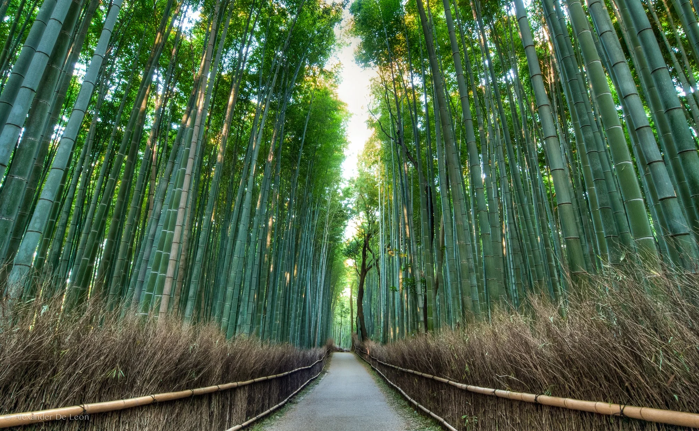
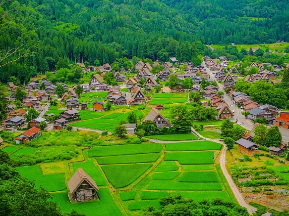
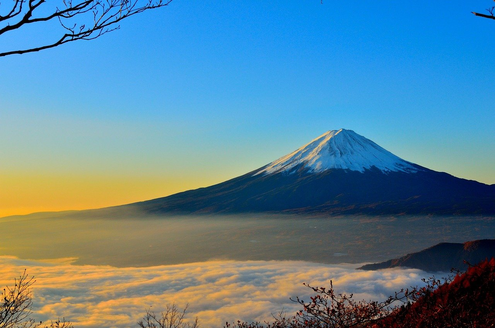
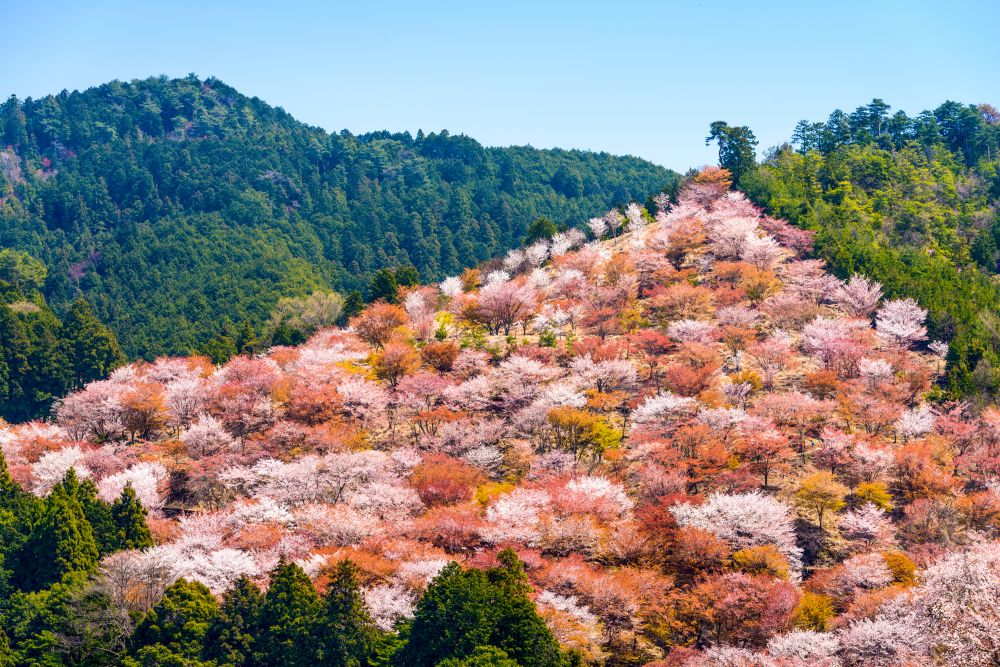
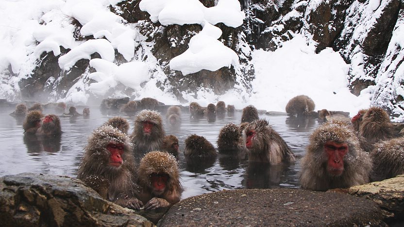

Gallery
Explore my collection of beautiful images from Japan.





Photo Highlights
Each of the captured photo tells a unique story in Japan, from stunning landscapes to wonderfull sight.
Explore my collection of beautiful images from Japan.





Each of the captured photo tells a unique story in Japan, from stunning landscapes to wonderfull sight.